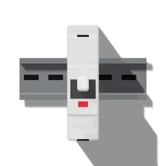

أساسيات الكهرباء · الدرس 7 من 13
الكهرباء لا تعطي فرصة ثانية. هذا أهم درس في الكورس: كيف تحمي نفسك، وكيف تعرف الفاز بمفك الاختبار، وكيف يحميك قاطع التسريب، وما العُدّة التي يجب أن تكون في حقيبتك.
4 خطوات بالترتيب: افصل القاطع، ثم تأكّد بمفك الاختبار أن الكهرباء انفصلت فعلًا، وعلّق ورقة على القاطع حتى لا يعيده أحد، واعمل بعُدّة معزولة ويد جافة.
افصل القاطع لا مفتاح المصباح. وإذا كانت الكهرباء موصولة فالمسموح قياس الجهد والقياس بالكلامب ميتر فقط.
ضع السن على السلك وإصبعك على المسمار الذي في ظهر المفك. إذا أضاء المصباح الذي بداخله فهذا السلك فاز.
مفك الاختبار يخبرك بوجود الفاز أو عدمه فقط. لا يخبرك بقيمة الجهد، ولا يعمل مع البطارية والـ DC.
لا تلمس السن أبدًا، ولا تفكّ به شيئًا ثقيلًا.
القاطع العادي MCB يحمي السلك من التيار الزائد والقصر، ويفصل عند تيارات كبيرة: 10A و 16A وهكذا.

قاطع التسريب RCD يحمي الإنسان: يفصل حين يتسرّب 30mA فقط، خلال 0.04 ثانية.
اضغط زر T على قاطع التسريب مرة كل شهر لتتأكّد أنه يعمل.
هذه العُدّة الأساسية لكل كهربائي:
العُدّة المعزولة الحقيقية مكتوب عليها 1000V وعليها علامة المثلث المزدوج.
قاطع التسريب للحماية الإضافية للأشخاص يكون 30mA بحسب IEC 60364 و IEC 61008. العُدّة المعزولة بحسب IEC 60900 (1000V). تقدّمك يُحفظ في حسابك.
© 2026 LearnElectricals. كل الحقوق محفوظة. الموقع غير تابع لأي من الشركات المذكورة (مثل Siemens و Allen-Bradley و Delta و Schneider وغيرها)، والأسماء والعلامات التجارية ملك لأصحابها، ومستخدمة لشرح الأجهزة فقط.